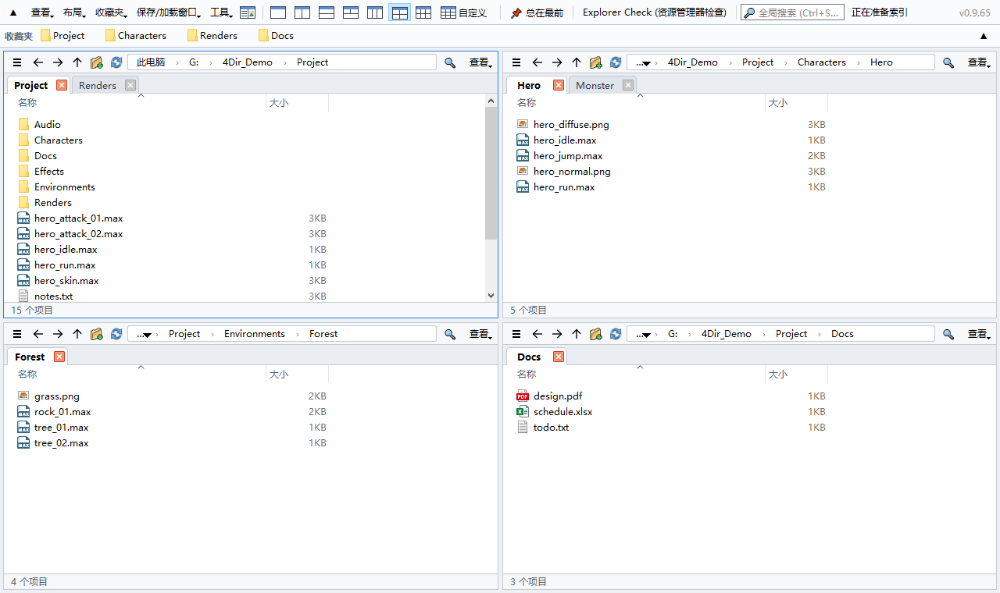
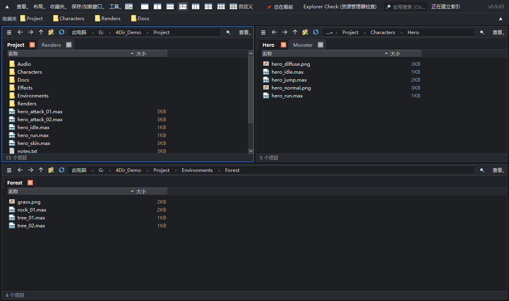

最多 20 个窗格。每个窗格都有标签页。轻巧不占资源。
适用于 Windows 10/11 的免费文件管理器。无需安装，解压即用。
Windows 10/11 64 位 · 33 MB · 2026-10-21 · 免费

功能
最多 20 个窗格
一键切换 1、2、3、4、6 窗格布局，或自定义最多 5 × 4 的网格。每个窗格都有独立的标签页。
不拖慢电脑
直接读取文件夹，不使用沉重的 Windows Shell 视图。空闲时没有定时器和轮询——可放心与 3ds Max、游戏等大型程序同时运行。
即时搜索
输入即可搜索所有驱动器上的文件名。自建索引实时更新，无需管理员权限。
SVN 状态一目了然
直接读取 .svn 显示修改/添加/冲突标记，内部有变更的文件夹显示为红色。Git、Perforce 通过 Windows 覆盖图标显示。
用起来像资源管理器
相同的快捷键、完整的 Windows 右键菜单，可与资源管理器及其他程序互相拖放。
便携且注重隐私
设置只保存在 4Dir 文件夹内。内置浅色/深色主题、10 种语言、批量重命名、会话恢复和资源管理器诊断。

安装方法
- 用上方按钮（或 GitHub 的 Releases）下载 zip。GitHub 上绿色的“Code → Download ZIP”只有源代码，无法直接运行。
- 右键 zip → 属性 → 勾选解除锁定 → 确定。（否则每次运行都会出现安全警告）
- 解压到任意位置，双击 4Dir.vbs。
如果出现 Windows SmartScreen：点击更多信息 → 仍要运行。4Dir 是新软件，尚未进行代码签名；源代码完全公开。
校验下载（可选）
在命令提示符中运行 certutil -hashfile 4Dir_v0.9.55.zip SHA256，结果应与下面一致：
f42b7685b997850584e639aacd754d90f8bc42130e85709c74acd1b310a41cd7
支持 4Dir
4Dir 免费且无广告。如果它为你节省了时间，一点小小的捐助能让更新持续下去。
常见问题
真的免费吗？
是的。4Dir 是免费开源软件（GPL-3.0）。无广告、无需账号、无试用期。
会发送数据吗？
不会发送个人数据。每天只检查一次是否有新版本（可在“工具”中关闭）。
遇到问题？
工具 → 保存问题报告日志，然后在 GitHub 上提交 issue 并附上 zip 文件。